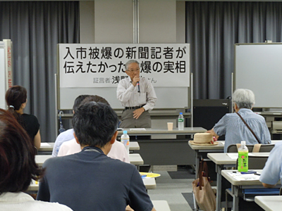
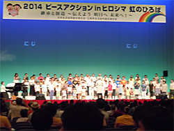
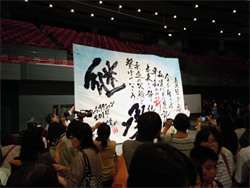
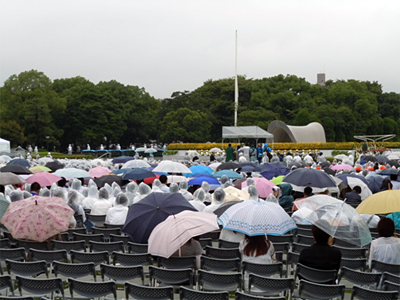

継承と創造～伝えよう 明日へ 未来へ！
2014ピースアクションinヒロシマが開催されました
被爆から69年目の夏を迎えた8月、「継承と創造～ヒロシマから平和な未来を築こう！」をテーマに2014ピースアクションinヒロシマが4日から6日まで広島市で開催されました。5日に開催された「2014ヒロシマ虹のひろば」をはじめ三日間、広島市内各所で19の企画が催されました。
ピースアクションinヒロシマ 8月4日～6日
入市被爆の新聞記者が伝えたかった被爆の実相
5日、入市被爆者の浅野温生さん（中国新聞記者）から、ご自身の体験と新聞記者として多くの被爆者の苦悩を取材されたお話を聴く催しが午前10時から中区の市民交流プラザで開催されました。
ご自身の体験をしずかに語る浅野さんのお話に100名の参加者がじっと聴き入りました。

全国から60生協1200人が参加して「ヒロシマ虹のひろば」を開催（日本生協連）
5日午後、会場となった広島県立総合体育館グリーンアリーナには全国の生協から1200人が参加しました。挨拶で松井一實広島市長は「核兵器は非人道兵器で絶対悪であり、絶対悪である核兵器の廃絶へ、平和を願う人々の思いや行動が世界中に広がっていくことを確信します」と話されました。リレーメッセージでは、被爆者を代表して広島県被団協の大越和郎さん（当時5歳で被爆）、生協組合員代表の片岡路子さん（広島中央保健生協理事）、NPO法人「IPRAY」による創作劇、大学生代表として安田女子大学書道学科の皆さんがパフォーマンスを含め、平和といのちの大切さを訴えました。また、会場内の「みんなのひろば」では、参加生協の展示や企画コーナーが設けられ、参加者が交流しました。
|  |  |
世界から4万5千人が参列した2014年平和記念式典
6日、広島市の主催による平成26年（2014年）広島市原爆死没者慰霊式並びに平和祈念式が午前8時から平和記念公園の原爆死没者慰霊碑前で挙行され、世界中から71ヶ国と欧州連合（EU）代表、原爆死没者のご遺族をはじめ多数の市民が参列しました。松井一實広島市長が平和宣言を読み上げ、核兵器廃絶と恒久平和の実現を世界に向けて訴えました。
原爆の投下された午前8時15分、平和の鐘とサイレンが鳴り響く中、参列者全員で黙とうし、原爆で亡くなった方々への哀悼の意と世界の恒久平和の実現を祈りました。

夜来の雨の中で営まれた原爆死没者慰霊式・平和祈念式（６日・平和記念公園）